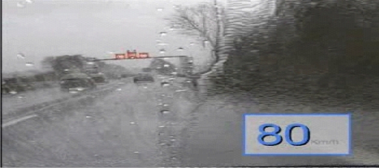
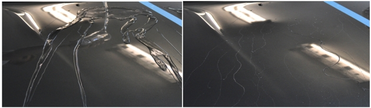
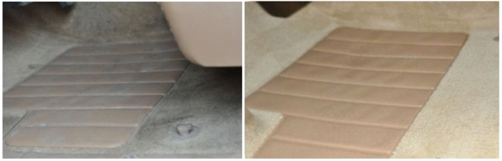

Что такое Нано-покрытие?
В первую очередь, это частица, имеющая размер 10-9, т.е. 1 миллиардная доля метра. Для сравнения, 1 нанометр относится к 1 метру как диаметр глаза – к диаметру земли. А на одном нано метре располагаются 10 атомов!
Во время нанесения нано-покрытия невидимые нано-частицы располагаются на обрабатываемой поверхности в определенном порядке. Таким образом на молекулярном уровне образуется пленка, которая приобретает ярко выраженный гидрофобный характер – специфическую «зубчатую» микроструктуру, которая не позволяет воде и грязи "сцепиться" с поверхностью. Этот эффект можно наблюдать и с растительном мире – так называемый «эффект лотоса»
Нано-стекло – вода не задерживается на стекле благодаря нанопленке. Уверенность на дороге, защита от встречной грязи, легкая мойка, не намерзает лед и снег, антибликовый эффект от света встречных фар и солнечных лучей. Во время движения в сильный дождь дворники работают на минимальной скорости!!!
Нано-лак – риски на кузове, битумные пятна, удары песка, агрессивное воздействие внешней среды и дорожных реагентов – всего этого можно избежать, благодаря нано обработке лакокрасочного покрытия автомобиля. Теперь кузов Вашего автомобиля находится под надежной защитой.
Обработка салона автомобиля – очистка и защита кожи, велюра, пластика и других поверхностей экстерьера авто позволят содержать Ваш автомобиль в чистоте и надолго защитить его от пятен, царапин, потертостей и неприятных запахов.
Нано-диски – дорожная грязь, битум, продукты износа тормозных колодок и другие агрессивные компоненты больше не страшны для дисков Вашего автомобиля, благодаря защитному нано-покрытию.
Наномойка Антидождь Инновационный автошампунь Полировка «Жидкое стекло»